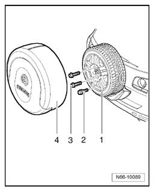

Spare Tire: Service and Repair
Spare Wheel, Removing And Installing
Removing

- Remove spare wheel cover -4- from spare wheel -1-.
- Remove bolts -2- and -3- and remove spare wheel -1- from bracket for spare wheel.
Installing

Installation of spare wheel -1- is the same in reverse order.
- Tightening torque: Bolts -2- and -3- 110 Nm